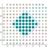
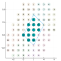

Hypercube Examples (Bravais Lattice)
Preamble
using LatticeTools
using Plots
mkpath("example_hypercube")
function draw_hypercube(hypercube::Hypercube, coordinates::AbstractMatrix{<:Integer})
xlim = (minimum(coordinates[1,:]) - 3.5, maximum(coordinates[1,:]) + 3.5)
ylim = (minimum(coordinates[2,:]) - 3.5, maximum(coordinates[2,:]) + 3.5)
boundary = let
r0 = [0,0]
r1 = hypercube.shape_matrix[:,1]
r2 = hypercube.shape_matrix[:,2]
hcat(r0, r1, r1 .+ r2, r2, r0)
end
fig = plot(boundary[1,:], boundary[2,:], label="", size=(400, 400))
for Ri in Iterators.product(-1:1, -1:1)
alpha = (Ri == (0,0)) ? 1.0 : 0.1
Rr = hypercube.shape_matrix * [Ri...]
scatter!(coordinates[1,:] .+ Rr[1], coordinates[2,:] .+ Rr[2], aspect_ratio=1, markersize=12, xlim=xlim, ylim=ylim, markeralpha=alpha, label="")
annotation = []
for i in 1:size(coordinates, 2)
x = coordinates[1,i] + Rr[1]
y = coordinates[2,i] + Rr[2]
if xlim[1] < x < xlim[2] && ylim[1] < y < ylim[2]
push!(annotation, (x, y, text("$i", 8, :black, :center)))
end
end
if !isempty(annotation)
annotation = [annotation...]
annotate!(annotation)
end
end
fig
enddraw_hypercube (generic function with 1 method)
(4,-4) x (4,4)
size_matrix = [ 4 4; -4 4]
hypercube = Hypercube(size_matrix)
generator_translations = find_generators(hypercube)
coordinates = generate_coordinates(hypercube, generator_translations)
coordmat = hcat(coordinates...)
println("All elements")
for (i, c) in enumerate(coordinates)
println("$i : $c")
end
println("Generator translations")
for (it, t) in enumerate(eachcol(generator_translations))
println("t($it) = $t")
end
draw_hypercube(hypercube, coordmat)
savefig("example_hypercube/bravais_(4,-4)x(4,4).svg")All elements 1 : [0, 0] 2 : [1, 0] 3 : [2, 0] 4 : [3, 0] 5 : [4, 0] 6 : [5, 0] 7 : [6, 0] 8 : [7, 0] 9 : [1, 1] 10 : [2, 1] 11 : [3, 1] 12 : [4, 1] 13 : [5, 1] 14 : [6, 1] 15 : [3, -3] 16 : [4, -3] 17 : [2, 2] 18 : [3, 2] 19 : [4, 2] 20 : [5, 2] 21 : [2, -2] 22 : [3, -2] 23 : [4, -2] 24 : [5, -2] 25 : [3, 3] 26 : [4, 3] 27 : [1, -1] 28 : [2, -1] 29 : [3, -1] 30 : [4, -1] 31 : [5, -1] 32 : [6, -1] Generator translations t(1) = [1, 0] t(2) = [1, 1] /home/runner/.julia/packages/GR/RlE5Y/src/../deps/gr/bin/gksqt: error while loading shared libraries: libQt5Widgets.so.5: cannot open shared object file: No such file or directory connect: Connection refused GKS: can't connect to GKS socket application GKS: Open failed in routine OPEN_WS GKS: GKS not in proper state. GKS must be either in the state WSOP or WSAC in routine ACTIVATE_WS

(2,-2) x (2,4)
size_matrix = [ 2 2; -2 4]
hypercube = Hypercube(size_matrix)
generator_translations = find_generators(hypercube)
coordinates = generate_coordinates(hypercube, generator_translations)
coordmat = hcat(coordinates...)
draw_hypercube(hypercube, coordmat)
println("All elements")
for (i, c) in enumerate(coordinates)
println("$i : $c")
end
println("Generator translations")
for (it, t) in enumerate(eachcol(generator_translations))
println("t($it) = $t")
end
draw_hypercube(hypercube, coordmat)
savefig("example_hypercube/bravais_(2,-2)x(2,4).svg")All elements 1 : [0, 0] 2 : [1, 0] 3 : [2, 0] 4 : [1, 2] 5 : [2, 2] 6 : [3, 2] 7 : [2, 1] 8 : [3, 1] 9 : [2, 3] 10 : [1, -1] 11 : [2, -1] 12 : [1, 1] Generator translations t(1) = [1, 0] t(2) = [2, 1] /home/runner/.julia/packages/GR/RlE5Y/src/../deps/gr/bin/gksqt: error while loading shared libraries: libQt5Widgets.so.5: cannot open shared object file: No such file or directory connect: Connection refused GKS: can't connect to GKS socket application GKS: Open failed in routine OPEN_WS GKS: GKS not in proper state. GKS must be either in the state WSOP or WSAC in routine ACTIVATE_WS

This page was generated using Literate.jl.